Introducción a R · Maestría en Ciencias Médicas, UNAM · 2027-1
Dra. Yalbi Itzel Balderas-Martínez
LABBIC — INER
Lo que te llevas hoy
Vas a poder decir por qué una figura funciona o no funciona, en lugar de que te guste o no te guste.
Es la diferencia entre rehacer una figura tres veces y rehacerla una.
Qué es visualizar
Representar datos e información con diagramas, gráficos, mapas y otras herramientas visuales.
Alberto Cairo la define como la disciplina que crea herramientas visuales para representar, explorar y analizar datos.
Cairo, A. (2013). The Functional Art: An Introduction to Information Graphics and Visualization. New Riders
Explorar, no solo comunicar
Esa definición trae algo que suele olvidarse: la visualización no es el último paso del análisis.
Es también cómo se explora: distribuciones, valores atípicos, si dos grupos se parecen. Muchas veces la figura es lo que te dice qué prueba aplicar, no al revés.
Un mapa que salvó vidas
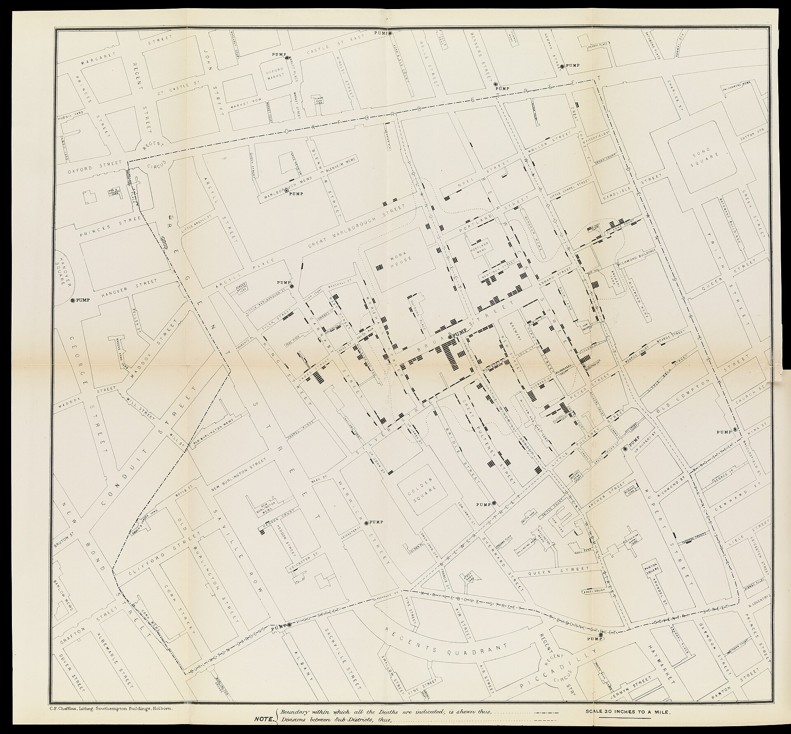
Mapa del cólera de Londres, 1854, del reporte de John Snow. Wellcome Collection, CC BY 4.0.
En 1854 John Snow marcó en un mapa de Londres cada muerte por cólera.
Las marcas se agrupaban alrededor de una bomba de agua en Broad Street.
Lo que hizo la figura
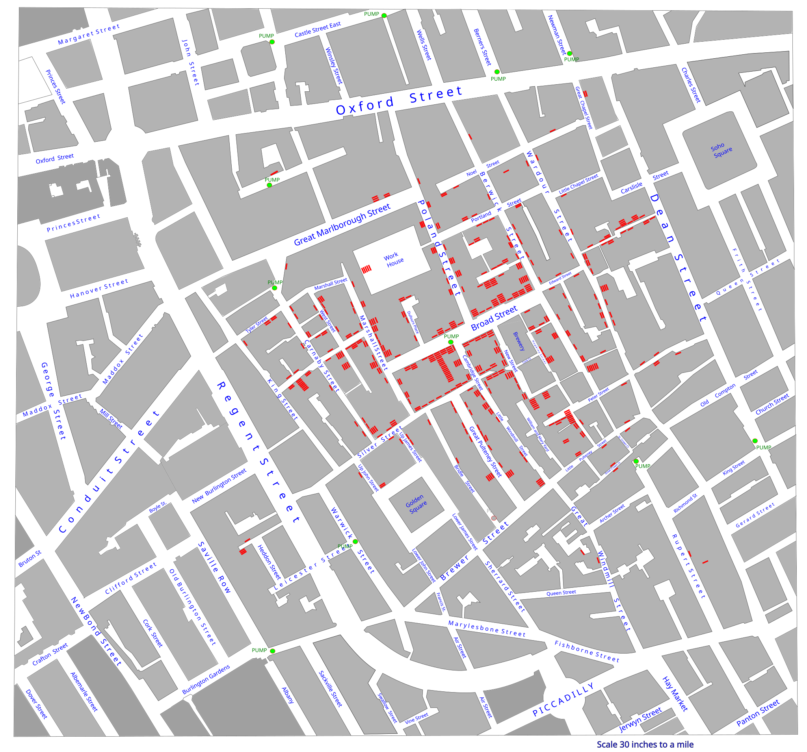
El mismo mapa, redibujado. Wikimedia Commons, dominio público.
La teoría dominante decía que el cólera venía del aire viciado. El mapa mostraba otra cosa: los casos rodeaban una fuente de agua.
Los mismos datos en una tabla no habrían mostrado ese patrón. El patrón era espacial, y solo se ve en el espacio.
Snow, J. (1855). On the Mode of Communication of Cholera (2.ª ed.). John Churchill
Quién inventó las barras
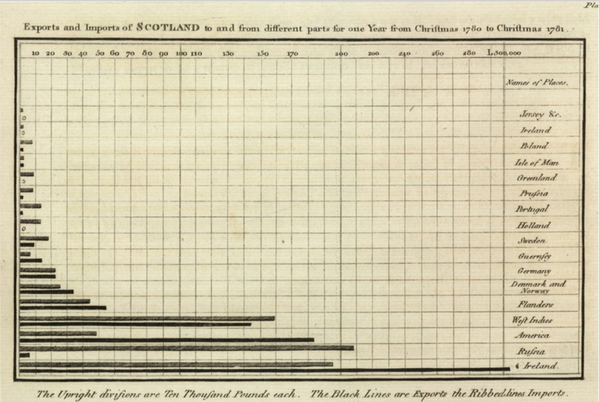
Exportaciones e importaciones de Escocia, 1780–1781. William Playfair, The Commercial and Political Atlas, 1786. Dominio público.
William Playfair, ingeniero y economista escocés, publicó los primeros gráficos de líneas y de barras en 1786.
Se apoyó en un diagrama de Joseph Priestley de 1765.
Y también las líneas y el pastel
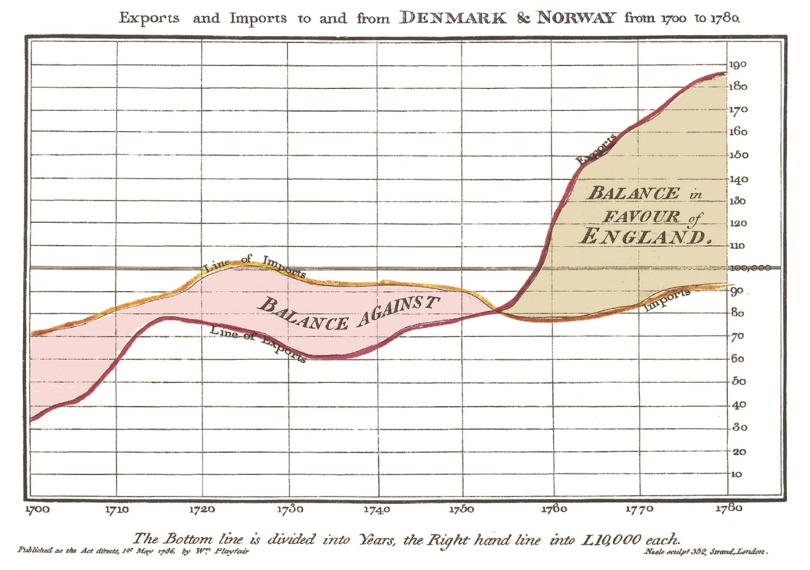
Dinamarca y Noruega, 1700–1780: la primera gráfica de líneas. Dominio público.
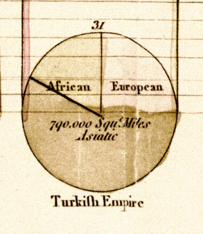
Imperio Otomano por continente: la primera gráfica de pastel, Statistical Breviary, 1801. Dominio público.
Barras, líneas y pastel salieron de la misma cabeza en quince años.
Seis variables en una figura
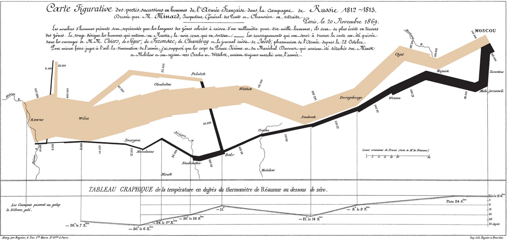
Charles Joseph Minard, Carte figurative de la campaña de Rusia de 1812 (1869). Dominio público.
El mapa de Minard sobre la campaña de Rusia muestra a la vez el número de soldados, la distancia, la temperatura, la latitud, la longitud y la dirección de la marcha.
El ancho de la banda es el ejército. Se estrecha hasta desaparecer.
No siempre existieron
Vale la pena tenerlo presente: las barras y las líneas son inventos, de hace poco más de dos siglos.
No son la forma natural de ver datos. Son una convención que funcionó, y que se puede elegir mal.
Qué problema resuelve una figura
Mostrar el código
# Cada piso es un trapecio; el de arriba es un triángulopisos <-c("Datos", "Información", "Conocimiento", "Sabiduría")ancho <-function(y) 4* (1- y /4) # la pirámide se angosta al subirpiramide <-do.call(rbind, lapply(1:4, function(k) { y0 <- k -1; y1 <- kdata.frame(piso = pisos[k], k = k,x =c(-ancho(y0), ancho(y0), ancho(y1), -ancho(y1)),y =c(y0, y0, y1, y1))}))ggplot(piramide, aes(x, y, group = piso, fill = k)) +geom_polygon(color ="white", linewidth =1) +annotate("text", x =0, y =0:3+0.5, label = pisos,color =c("white", "white", "white", "grey15"), size =4) +scale_fill_gradient(low = azul_unam, high = azul_claro, guide ="none") +coord_fixed(ratio =0.9) +theme_void()
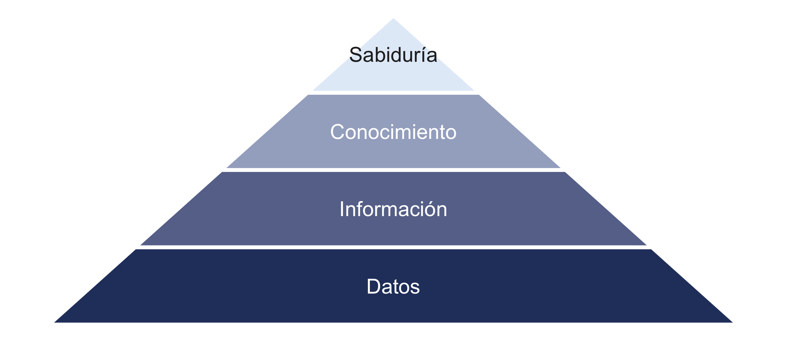
Richard Saul Wurman lo llamó ansiedad informacional: la distancia entre lo que entendemos y lo que creemos que deberíamos entender.
Una buena figura cierra esa distancia. Una mala la agranda.
Wurman, R. S. (1989). Information Anxiety. Doubleday · Ackoff, R. L. (1989). From data to wisdom. Journal of Applied Systems Analysis, 16, 3–9
La cadena
mundo → quien comunica → audiencia
Tú estás en medio. Tu trabajo no es mostrar todo lo que hay: es que quien mira entienda algo que antes no entendía.
Es un arte funcional
Una visualización tiene un propósito: ayudar a quien la ve.
No es decoración, y tampoco es arte libre. Se juzga por si funciona.
Abstracción
Mapa del Metro de la Ciudad de México, variante geográfica. Wikimedia Commons, CC BY 4.0.
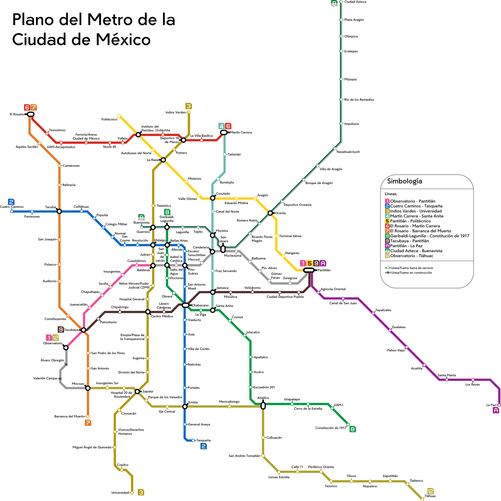
Plano del Metro de la Ciudad de México, diagrama esquemático. Wikimedia Commons, CC BY-SA 4.0.
Los dos son el mismo Metro. El de la izquierda es correcto en el espacio; el de la derecha te dice dónde transbordar.
Quitar lo necesario para que resalte lo que quieres mostrar.
Casi siempre el problema de una figura no es que le falte algo. Es que le sobra.
Los principios del diseño
Reglas que siguen los diseñadores para armar una composición ordenada y funcional.
Son seis, y aplican igual a un cartel que a una figura de artículo.
1. Balance
Cada elemento tiene un peso visual, que depende de su forma, tamaño, color y textura.
Una composición balanceada reparte ese peso. Puede ser simétrica o asimétrica: las dos funcionan, siempre que sea deliberado.
Sentido común: como un subibaja. Un niño grande cerca del centro equilibra a uno chico en la punta.
Mostrar el código
# Formas abstractas: el tamaño del punto es su peso visualformas <-rbind(data.frame(v ="Desbalanceada", x =c(1.2, 1.8, 1.5), y =c(2.2, 1.4, 0.7),s =c(18, 14, 10)),data.frame(v ="Simétrica", x =c(1, 3, 2), y =c(1.5, 1.5, 0.7),s =c(14, 14, 8)),data.frame(v ="Asimétrica", x =c(1.2, 2.8, 3.2), y =c(1.5, 2.1, 0.9),s =c(20, 9, 9)))formas$v <-factor(formas$v, levels =unique(formas$v))ggplot(formas, aes(x, y)) +annotate("segment", x =2, xend =2, y =0.2, yend =2.8,linetype ="dotted", color ="grey60") +geom_point(aes(size = s), color = azul_r) +scale_size_identity() +facet_wrap(~ v) +coord_cartesian(xlim =c(0.4, 3.6), ylim =c(0.2, 2.8)) +theme_void() +theme(strip.text =element_text(size =10, face ="bold"),panel.border =element_rect(fill =NA, color ="grey80"))
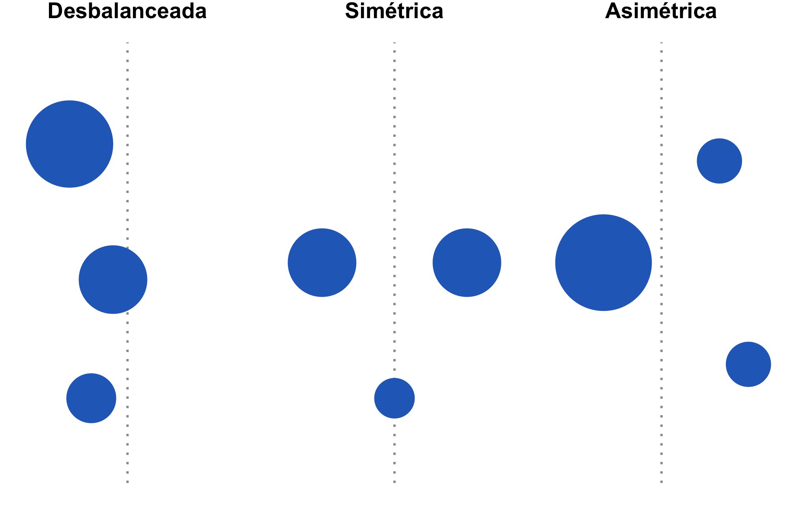
2. Unidad
La armonía que producen los elementos juntos. Colores y formas parecidos hacen que las cosas se lean como un conjunto y no como piezas sueltas.
Mostrar el código
conteo <-as.data.frame(table(raza = birthwt$raza), responseName ="n")unidad <-rbind(transform(conteo, v ="Sin unidad", color =c("#E4002B", "#00A651", "#9B30FF")),transform(conteo, v ="Con unidad", color =c(azul_unam, azul_r, "#7FA8DD")))unidad$v <-factor(unidad$v, levels =c("Sin unidad", "Con unidad"))ggplot(unidad, aes(raza, n, fill = color)) +geom_col(width = .6) +scale_fill_identity() +facet_wrap(~ v) +labs(x ="Raza de la madre", y ="Nacimientos")
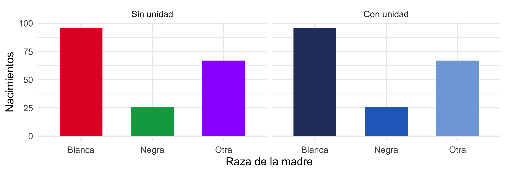
Los mismos datos. A la izquierda cada barra parece de otra gráfica; a la derecha se leen como una sola familia.
3. Contraste
La diferencia entre elementos, usada para crear jerarquía: qué se ve primero, qué después. Sin contraste todo pesa igual, y entonces nada destaca.
Mostrar el código
medias <-aggregate(bwt ~ raza + fuma, data = birthwt, FUN = mean)medias$grupo <-paste(medias$raza, medias$fuma, sep ="\n")medias$min <- medias$bwt ==min(medias$bwt)cont <-rbind(transform(medias, v ="Sin contraste", color = azul_r),transform(medias, v ="Con contraste",color =ifelse(min, dorado, "grey80")))cont$v <-factor(cont$v, levels =c("Sin contraste", "Con contraste"))ggplot(cont, aes(grupo, bwt, fill = color)) +geom_col(width = .65) +scale_fill_identity() +facet_wrap(~ v) +labs(x =NULL, y ="Peso medio al nacer (g)") +theme(axis.text.x =element_text(size =7))
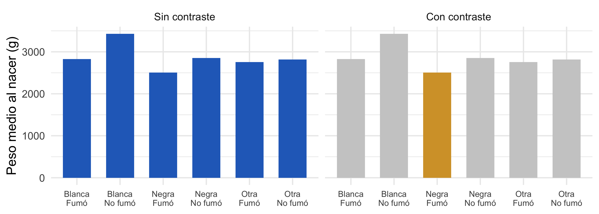
Con contraste, el grupo de peso más bajo se ve antes que el resto.
4. Énfasis
Dirigir la mirada a un punto. Si la figura tiene un resultado principal, ese resultado debe verse antes que el resto. Si todo grita, nadie escucha.
Mostrar el código
enf <-rbind(transform(birthwt, v ="Sin énfasis", color = azul_r),transform(birthwt, v ="Con énfasis",color =ifelse(fuma =="Fumó", dorado, "grey80")))enf$v <-factor(enf$v, levels =c("Sin énfasis", "Con énfasis"))ggplot(enf, aes(lwt *0.4536, bwt, color = color)) +geom_point(size =1.4) +scale_color_identity() +geom_text(data =data.frame(v =factor("Con énfasis", levels(enf$v))),aes(x =105, y =900, label ="En dorado: la madre fumó"),color ="grey20", size =3, hjust =1, inherit.aes =FALSE) +facet_wrap(~ v) +labs(x ="Peso de la madre (kg)", y ="Peso al nacer (g)")
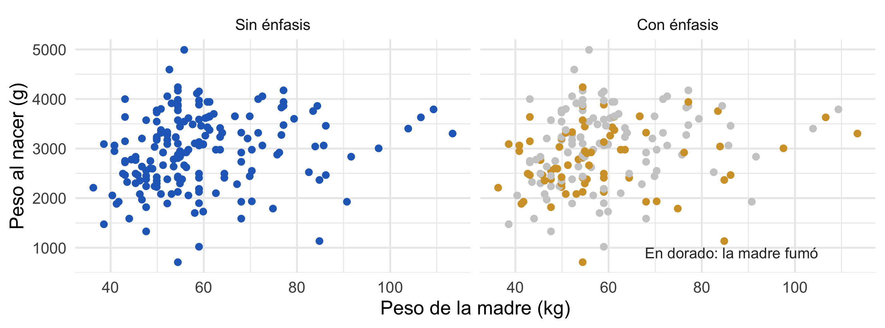
5. Repetición y patrón
Repetir elementos crea consistencia: la misma variable, del mismo color, en todos los paneles. Es lo que permite leer una figura de varios paneles sin volver a la leyenda cada vez.
Mostrar el código
largo <-rbind(data.frame(raza = birthwt$raza, panel ="Peso de la madre (kg)",valor = birthwt$lwt *0.4536),data.frame(raza = birthwt$raza, panel ="Peso al nacer (g)",valor = birthwt$bwt))ggplot(largo, aes(raza, valor, fill = raza)) +geom_boxplot(width = .55, outlier.size = .8) +scale_fill_manual(values =c(Blanca = azul_claro, Negra = azul_unam,Otra = dorado)) +facet_wrap(~ panel, scales ="free_y") +labs(x ="Raza de la madre", y =NULL, fill =NULL) +theme(legend.position ="none")
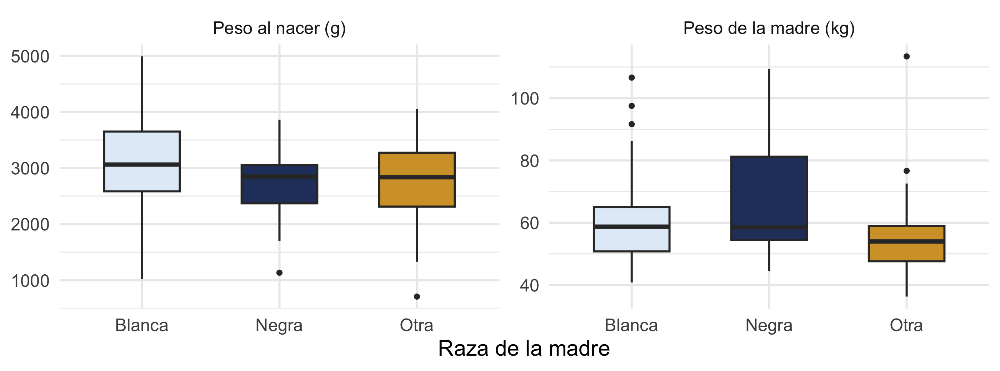
6. Ritmo
Repetición y patrón aplicados al mismo elemento, dando sensación de recorrido. Ordena por dónde entra el ojo y hacia dónde va.
Mostrar el código
medias$etiqueta <-paste(medias$raza, tolower(medias$fuma), sep =", ")r1 <-transform(medias, v ="Sin ritmo: orden alfabético",pos =rank(-xtfrm(etiqueta)))r2 <-transform(medias, v ="Con ritmo: de mayor a menor", pos =rank(bwt))ritmo <-rbind(r1, r2)ritmo$v <-factor(ritmo$v, levels =c(r1$v[1], r2$v[1]))ggplot(ritmo, aes(bwt, pos)) +geom_col(orientation ="y", fill = azul_r, width = .65) +geom_text(aes(x =50, label = etiqueta), hjust =0, color ="white", size =2.8) +facet_wrap(~ v) +scale_y_continuous(breaks =NULL) +labs(x ="Peso medio al nacer (g)", y =NULL)
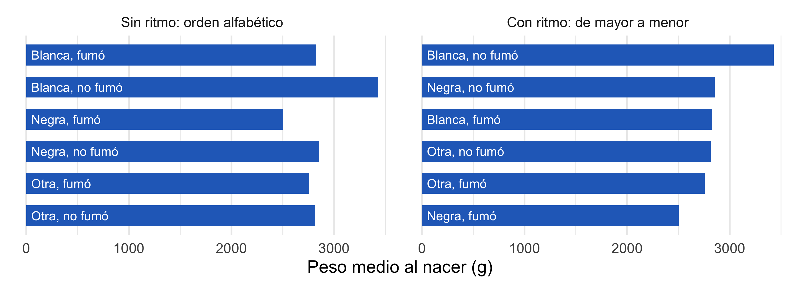
Las tres preguntas
Antes de abrir R, contesta:
¿Qué quiero comunicar?
¿Quién es mi audiencia?
¿Cuál es la mejor forma de comunicar ese mensaje?
En ese orden
Elegir el tipo de gráfico es la tercera pregunta, no la primera.
Casi todas las figuras que no funcionan se decidieron al revés: se eligió barras o pastel antes de saber qué se quería decir.
Qué buscamos
Una figura clara, precisa, efectiva y eficiente.
Precisa importa especialmente en salud: una escala truncada o un eje sin cero pueden exagerar un efecto que no existe.
Práctica
Busca una figura de un artículo de tu campo y contéstale las tres preguntas.
Después revísala contra los seis principios. La actividad está en el notebook de la sesión.
Lo que viste hoy
Visualizar es explorar, no solo comunicar
John Snow y Playfair: la figura como argumento
Abstracción: sobra más de lo que falta
Los seis principios: balance, unidad, contraste, énfasis, repetición, ritmo
Las tres preguntas, en su orden
Referencias
Ackoff, R. L. (1989). From data to wisdom. Journal of Applied Systems Analysis, 16, 3–9
Cairo, A. (2013). The Functional Art: An Introduction to Information Graphics and Visualization. New Riders
Minard, C. J. (1869). Carte figurative des pertes successives en hommes de l’Armée Française dans la campagne de Russie 1812–1813. Dominio público
Playfair, W. (1786). The Commercial and Political Atlas. Londres. Dominio público
Playfair, W. (1801). The Statistical Breviary. Londres. Dominio público
Snow, J. (1855). On the Mode of Communication of Cholera (2.ª ed.). John Churchill
Wurman, R. S. (1989). Information Anxiety. Doubleday
Datos de los ejemplos: birthwt, en Venables, W. N. y Ripley, B. D. (2002). Modern Applied Statistics with S. Springer
Mapas del Metro de la Ciudad de México: Wikimedia Commons, CC BY 4.0 y CC BY-SA 4.0